SQLServer常用知识点
Category:
数据库
发表:
更新:
SQLServer自带的工具不好用，所以这里主要介绍使用Navicat操作SQLserver以及SQLserver的一些常用知识点。
使用Navicat新建数据库、用户及权限赋予
新建数据库
1.启动Navicat，点击建立SQLserver连接。
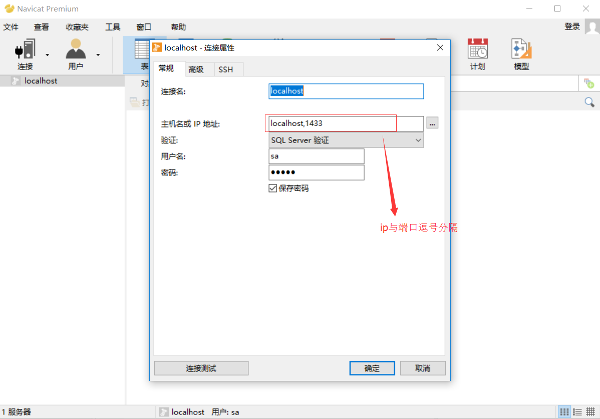
2.右键数据库服务器，选择“新建数据库”，输入数据库名，在文件选项卡还能选择数据库存放的位置。点击“确定”即完成数据库的创建
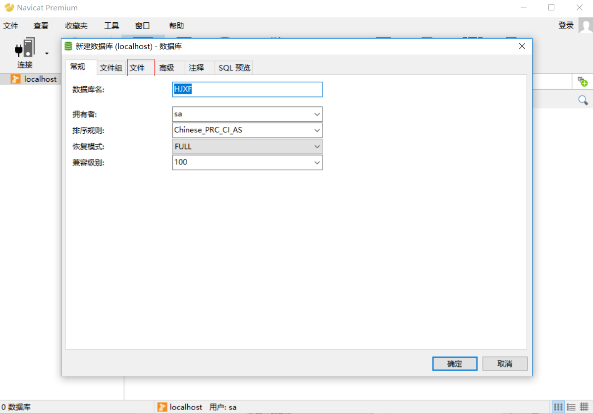
新建登录用户
1.双击新建的数据库，点击“用户”，下拉选择“登录”，点击新建登录。
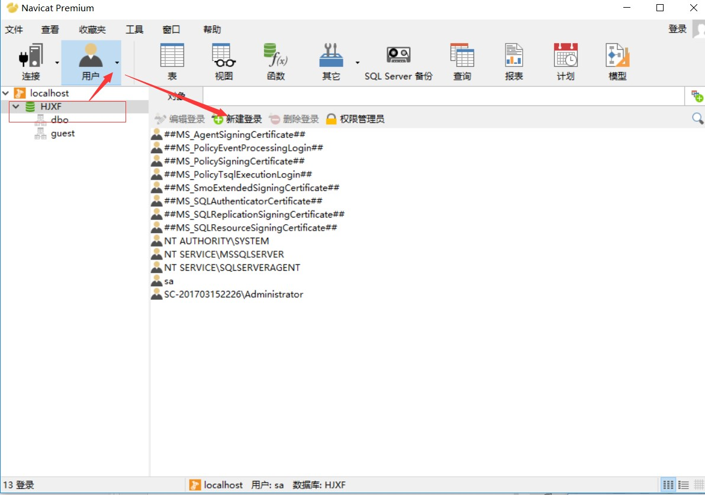
2.先设置“常规”选项卡
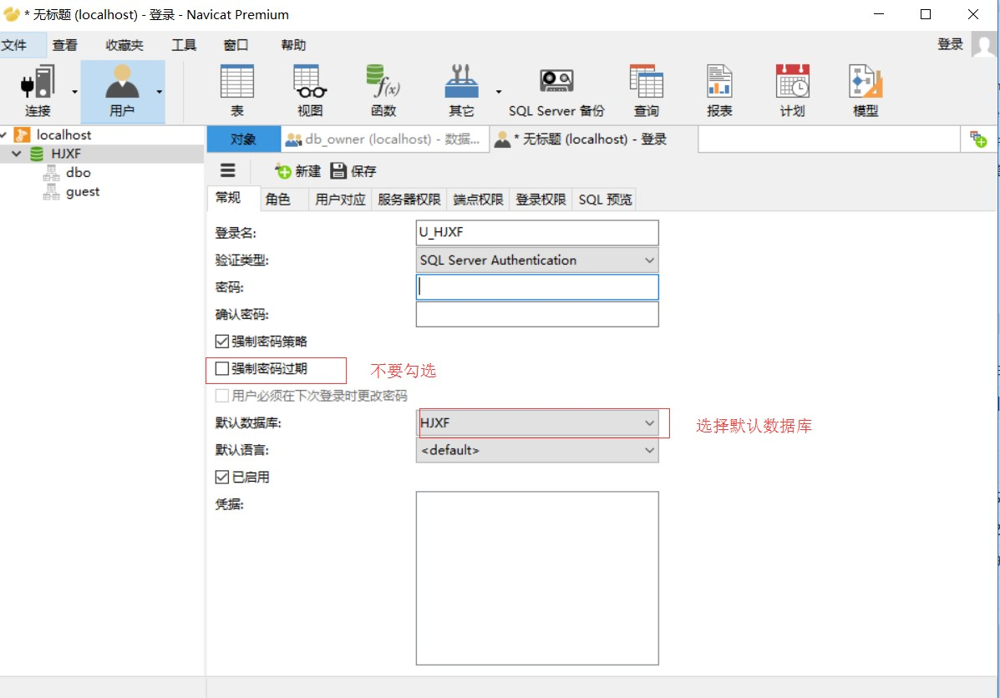
3.设置完“常规”选项卡之后，设置用户对应选项卡，勾选刚才新建的数据库。
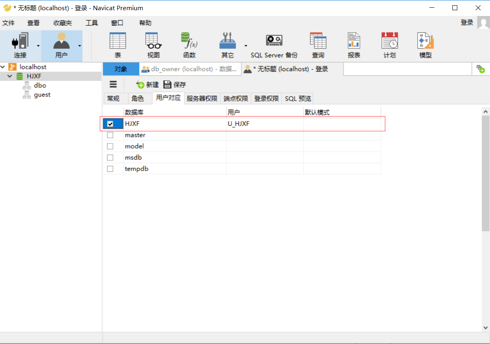
4.完成“常规”和“用户对应”选项卡的设置之后，点击“保存”即完成登录用户的创建。
用户授权
1.双击打开新建的数据库，点击“用户”，下拉选择“数据库角色”，选择“db_owner”，双击进去。
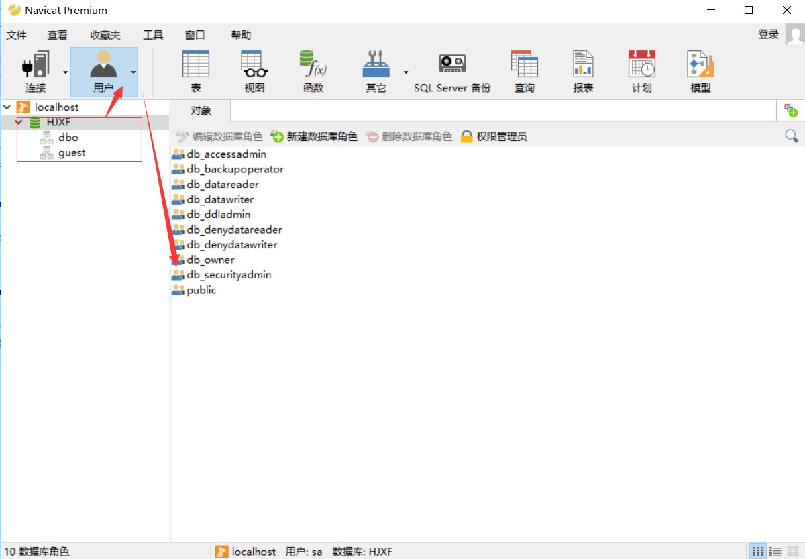
2.点击选择我们刚刚新建的用户“U_HJXF”，点击保存即可。
3.使用新建的用户登录测试。
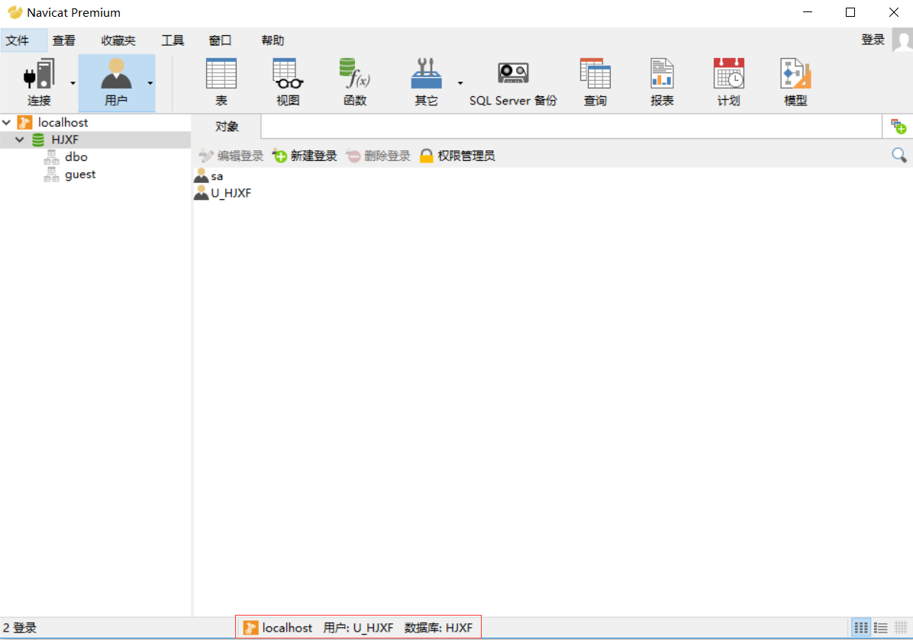
SQLServer常用知识点
查看表字段注释
123456789SELECTA.name AS table_name,B.name AS column_name,C.VALUE AS column_descriptionFROM sys.tables A INNER JOIN sys.columns B ON B.object_id = A.object_idLEFT JOIN sys.extended_properties C ON C.major_id = B.object_idAND C.minor_id = B.column_idWHEREA.name = 'T_XYPJ_XXTB_ZBTB'数据库的备份与还原
- 备份
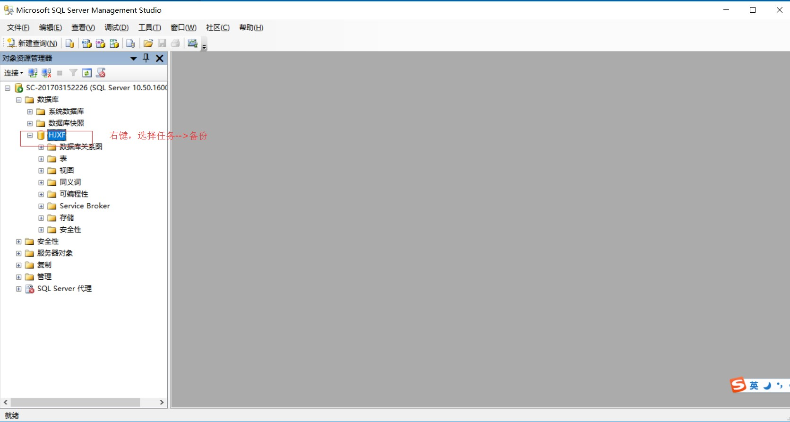
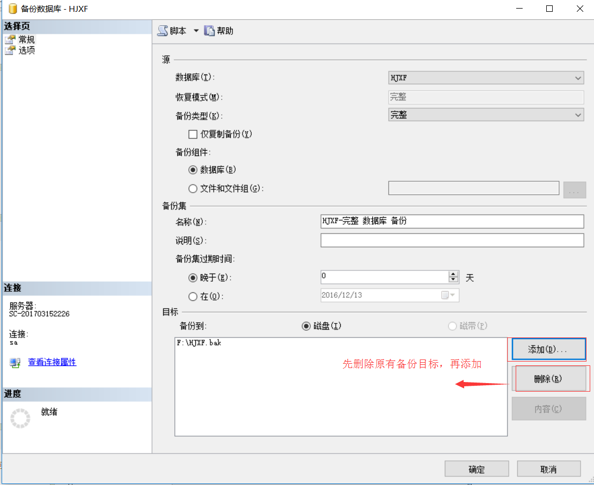 - 还原
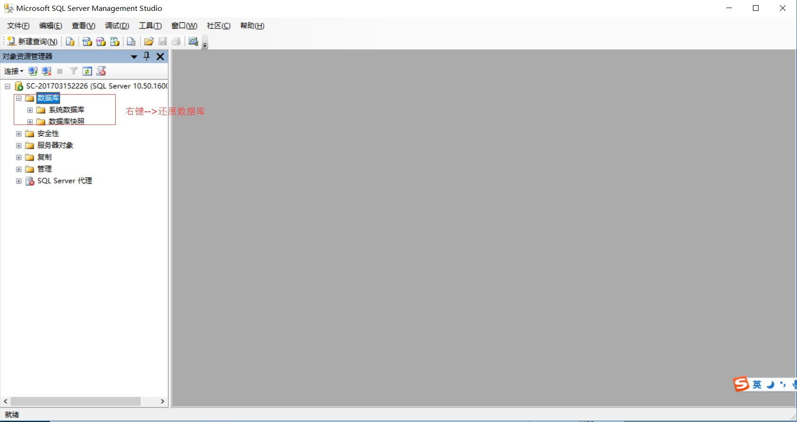
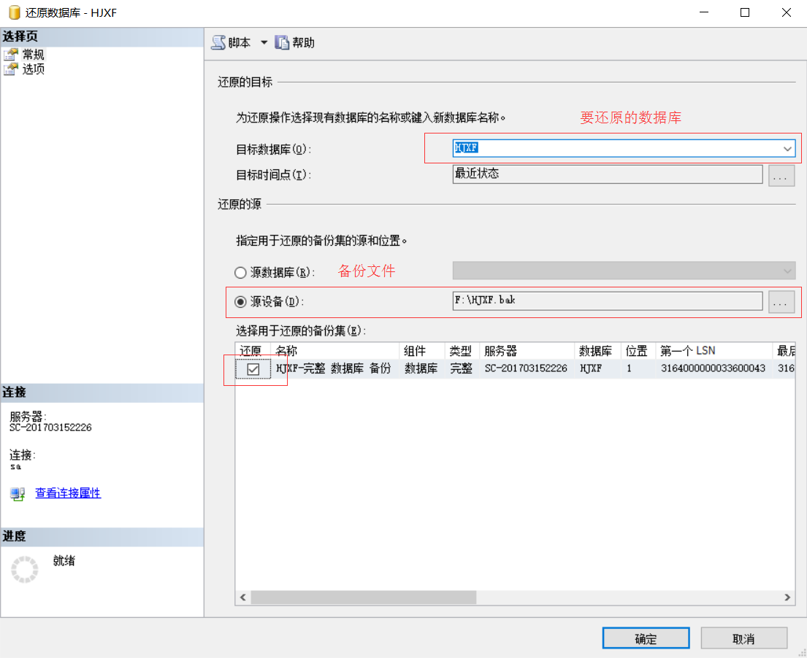
- 备份